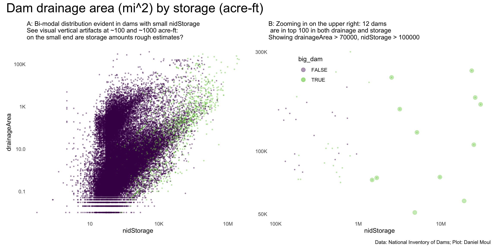
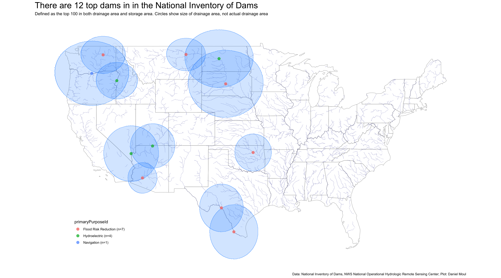
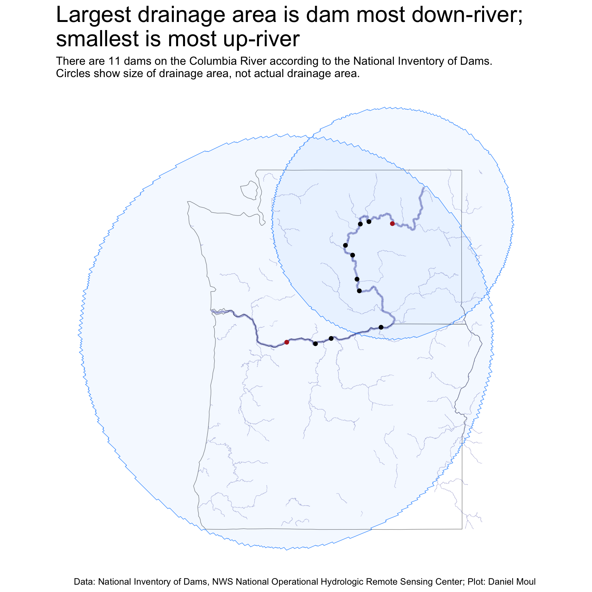
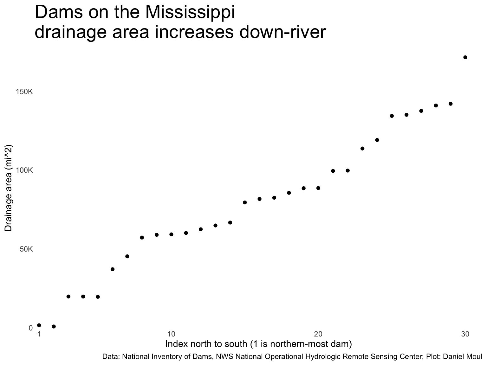

The numerical summaries in Chapter 6 raise some interesting questions. One is “How is drainageArea defined? Is it the watershed drained by the current dam extending upriver to the next dam? Or is a dam’s drainageArea inclusive of the whole up-river watershed? The exploration below confirms the latter.
8.1 Dams with the largest drainage areas
First: data quality. There seems to be some errors in the data. In the top 20 dams in terms of drainageArea (mi^2), some seem too small (nidStorage, nidHeight and surfaceArea) to drain such a large area (Table 8.1).
OK22289 on the Oklahoma River see also Google Maps which is “claiming” the entire drainage area of the Oklahoma River, which like Soo locks in Michigan, distorts.
MI00650 Soo Locks on Lake Superior as discussed in Chapter 6 Numbers.
So let’s let’s remove them and look at the 54,443 dams in the NID that are not missing any values for nidStorage, nidHeight, surfaceArea, and drainageArea.
In Figure 8.1 Panel B the 12 larger points represent dams that are in both the top 100 dams by drainageArea and by nidStorage.
Show the code
p1 <- dta_for_model |>ggplot() +geom_point(aes(nidStorage, drainageArea, color = big_dam),size =0.5, alpha =0.4,na.rm =TRUE,show.legend =FALSE) +scale_x_log10(labels =label_number(scale_cut =cut_short_scale())) +scale_y_log10(labels =label_number(scale_cut =cut_short_scale())) +scale_color_viridis_d(end =0.8) +# guides(color = guide_legend(override.aes = list(size = 3))) +labs(subtitle =glue("A: Bi-modal distribution evident in dams with small nidStorage","\nSee visual vertical artifacts at ~100 and ~1000 acre-ft:\non the small end are storage amounts rough estimates?") )my_drainageArea <-70000my_nidStorage <-100000p2 <- dta_for_model |>filter(drainageArea > my_drainageArea, nidStorage > my_nidStorage) |>ggplot() +geom_point(data = dta_for_plot,aes(nidStorage, drainageArea, color = big_dam),size =3, alpha =0.4,na.rm =TRUE) +geom_point(aes(nidStorage, drainageArea, color = big_dam),size =0.5, alpha =0.4,na.rm =TRUE) +scale_x_log10(labels =label_number(scale_cut =cut_short_scale())) +scale_y_log10(labels =label_number(scale_cut =cut_short_scale())) +scale_color_viridis_d(end =0.8) +guides(color =guide_legend(position ="inside",override.aes =list(size =3))) +theme(legend.position.inside =c(0.2, 0.85)) +# c(0.85, 0.2)) +labs(subtitle =glue("B: Zooming in on the upper right: {n_top100_drainage_storage} dams", "\n are in top 100 in both drainage and storage","\nShowing drainageArea > {my_drainageArea}, nidStorage > {my_nidStorage}"),y =NULL )p1 + p2 +plot_annotation(title ="Dam drainage area (mi^2) by storage (acre-ft)",caption = my_caption )

Figure 8.1: Drainage by storage
Show the code
top_dams <- dams |>select(name, otherNames, nidId, big_dam, primaryOwnerTypeId, primaryPurposeId, nidStorage, nidHeight, surfaceArea, drainageArea) |>inner_join( dta_for_plot |>select(nidId),by ="nidId" ) |>mutate(drainageArea_m2 = drainageArea *2.59e+6, # convert to metersdrainage_radius =sqrt(drainageArea_m2 / pi), # area = pi * r^2drainage_circle =st_buffer(geom, dist = drainage_radius),drainage_area_check =st_area(drainage_circle),ptc_of_defined_area = drainage_area_check / drainageArea_m2 )top_dams |>st_drop_geometry() |>arrange(desc(drainageArea)) |>select(name, otherNames, nidId, primaryOwnerTypeId, primaryPurposeId, nidStorage, nidHeight, surfaceArea, drainageArea) |>gt() |>tab_options(table.font.size =11) |>tab_header(md(glue("**There are {n_top100_drainage_storage} dams in NID in the top 100", " for both storage capacity and drainageArea**"))) %>%fmt_number(columns =c(nidStorage, nidHeight, surfaceArea, drainageArea),decimals =0)
Table 8.2
There are 12 dams in NID in the top 100 for both storage capacity and drainageArea
name
otherNames
nidId
primaryOwnerTypeId
primaryPurposeId
nidStorage
nidHeight
surfaceArea
drainageArea
Oahe Dam
Lake Oahe
SD01095
Federal
Flood Risk Reduction
23,600,000
245
376,000
243,490
John Day Lock and Dam
Lake Umatilla
OR00011
Federal
Navigation
2,530,000
230
55,000
226,000
Garrison Dam
Lake Sakakawea
ND00145
Federal
Hydroelectric
26,000,000
210
133,000
180,940
Hoover Dam
Lake Mead
NV10122
Federal
Hydroelectric
30,237,000
730
162,700
167,800
Falcon Dam
NA
TX00024
Federal
Flood Risk Reduction
3,177,000
175
115,400
159,270
Amistad Dam
NA
TX02296
Federal
Flood Risk Reduction
5,128,000
287
89,000
123,134
Glen Canyon Dam
Lake Powell
AZ10307
Federal
Hydroelectric
25,025,826
710
160,784
107,417
Grand Coulee Dam
Franklin D. Roosevelt Lake
WA00262
Federal
Flood Risk Reduction
9,715,346
550
82,300
75,117
Keystone Dam
Keystone Lake
OK10309
Federal
Flood Risk Reduction
1,672,613
121
22,420
74,506
Brownlee
Brownlee
ID00056
Private
Hydroelectric
1,470,000
395
14,621
72,800
Fort Peck Dam
Fort Peck Lake
MT00025
Federal
Flood Risk Reduction
19,100,000
256
93,000
57,725
Painted Rock Dam
Painted Rock Reservoir
AZ10002
Federal
Flood Risk Reduction
4,831,500
181
1
50,800
In the NID data dictionary, drainage area is defined as follows:
Drainage area of the dam, in square miles, which is defined as the area that drains to a particular point (in this case, the dam) on a river or stream.
Thus when one dam is downriver of another, the downriver dam drainage area includes the upriver dam’s drainage area. In Figure 8.2 this is visible in the drainage areas of dams on the Columbia River (Figure 8.3). It’s also evident in the dams on the Missouri River in Montana, North Dakota, and South Dakota (Figure 8.4).
The top dams are all west of the Mississippi River.
Show the code
n_top_dams <-nrow(top_dams)ggplot() +geom_sf(data = state_boundaries_sf,color ="grey50",fill =NA,alpha =0.01) +geom_sf(data = rivers_us,color ="darkblue",linewidth =0.1,fill =NA,alpha =0.3) +geom_sf(data = top_dams |>st_set_geometry("drainage_circle"), #|># st_crop(bbox_continental),color ="dodgerblue", fill ="dodgerblue",alpha =0.2) +geom_sf(data = top_dams |>mutate(n_primaryPurposeId =n(),.by = primaryPurposeId) |>mutate(primaryPurposeId =glue("{primaryPurposeId} (n={n_primaryPurposeId})"),primaryPurposeId =fct_reorder(primaryPurposeId, -n_primaryPurposeId)),aes(color = primaryPurposeId),size =3,alpha =0.75) +guides(color =guide_legend(override.aes =list(size =3),position ="inside")) +theme(axis.text =element_blank(),axis.ticks =element_blank(),axis.title =element_blank(),legend.position.inside =c(0.15, 0.15)) +labs(title =glue("There are {n_top_dams} top dams in in the National Inventory of Dams"),subtitle =glue("Defined as the top 100 in both drainage area and storage area."," Circles show size of drainage area, not actual drainage area"),caption = my_caption_nid_nws )

Figure 8.2: Map of top dams
Zooming into the parts of the Columbia River basin in Washington and Oregon…
Show the code
columbia_river_watershed <-st_read(here("data/raw/usgs/WBD_17_HU2_GDB/WBD_17_HU2_GDB.gdb"),layer ="WBDHU4",quiet =TRUE)# col_layers <- st_layers(here("data/raw/usgs/WBD_17_HU2_GDB/WBD_17_HU2_GDB.gdb"))# library(nhdplusTools)# # # -------------------------------------------------------------# # 1. Find the COMID (hydrologic ID) for the Columbia River outlet# # -------------------------------------------------------------# # Use the approximate mouth coordinates of the Columbia River# # columbia_outlet <- data.frame(# # lon = -123.97,# # lat = 46.25# # )# # columbia_outlet <- c(# lon = -123.97,# lat = 46.25# )# # # # # Get COMID for the river outlet# comid <- discover_nhdplus_id(st_sfc(st_point(columbia_outlet),# crs = "NAD83")# )# # # # # -------------------------------------------------------------# # # 2. Get the upstream watershed (all catchments draining to that COMID)# # # -------------------------------------------------------------# # # get_vaa_names() # shows available attributes# # columbia_watershed <- get_nhdplus(#AOI = comid, # # comid = comid,# # realization = "catchment")# # # # Alternatively, to get the complete upstream network (larger area):# columbia_network <- get_nhdplus(comid = comid, realization = "catchment")# # flowline <- navigate_nldi(list(featureSource = "comid", # featureID = comid), # mode = "upstreamTributaries", # distance_km = 9000)# # # # -------------------------------------------------------------# # 3. Convert to sf and ensure consistent CRS# # -------------------------------------------------------------# columbia_sf <- st_as_sf(columbia_watershed)# -------------------------------------------------------------# 4. Plot with ggplot# -------------------------------------------------------------my_rivers <-st_join(columbia_river_watershed, rivers_us,join = st_touches)# my_rivers <- st_crop(rivers_us, columbia_river_watershed)wa_or_bbox <-st_bbox(state_boundaries_sf |>filter(state_abb %in%c("WA", "OR")) )ggplot() +geom_sf(data = state_boundaries_sf |>filter(state_abb %in%c("WA", "OR")),fill =NA) +geom_sf(data = columbia_river_watershed |>st_crop(wa_or_bbox),fill ="skyblue", color ="firebrick", size =0.1,alpha =0.2) +geom_sf(data = my_rivers |># filter(pname == "COLUMBIA R") |>st_crop(wa_or_bbox),color ="darkblue",linewidth =0.5,fill =NA,alpha =0.3) +geom_sf(data = rivers_us |>filter(PNAME =="COLUMBIA R") |>st_crop(wa_or_bbox),color ="darkblue",linewidth =1,fill =NA,alpha =0.3) +coord_sf() +labs(title ="Columbia River Watershed",# subtitle = "Retrieved using nhdplusTools and plotted with ggplot2",caption ="Source: USGS National Hydrography Dataset (NHDPlus)" ) +theme_minimal()# # -------------------------------------------------------------# # 1. Get the USGS Watershed Boundary Dataset (WBD)# # -------------------------------------------------------------# # HUC2 = 17 corresponds to the Columbia River Basin# columbia_huc <- "17"# # # Retrieve the HUC2 polygon for the Columbia River Basin# columbia_basin <- subset_wbd(huc = columbia_huc, type = "huc2")# # # -------------------------------------------------------------# # 2. Check and transform CRS if needed# # -------------------------------------------------------------# columbia_basin <- st_transform(columbia_basin, 4326)# # # -------------------------------------------------------------# # 3. Plot with ggplot# # -------------------------------------------------------------# ggplot() +# geom_sf(data = columbia_basin, fill = "lightblue", color = "darkblue", size = 0.4) +# coord_sf() +# labs(# title = "Columbia River Basin (HUC2 = 17)",# subtitle = "Watershed Boundary Dataset (WBD)",# caption = "Source: USGS / nhdplusTools"# ) +# theme_minimal()
Show the code
dta_for_plot <- dams |>select(nidId, riverName, drainageArea, geom) |>filter(str_squish(str_to_lower(riverName)) =="columbia river") |>mutate(drainageArea_m2 = drainageArea *2.59e+6, # convert to metersdrainage_radius =sqrt(drainageArea_m2 / pi), # area = pi * r^2drainage_circle =st_buffer(geom, dist = drainage_radius),drainage_area_check =st_area(drainage_circle),ptc_of_defined_area = drainage_area_check / drainageArea_m2,spotlight = (drainageArea_m2 ==max(drainageArea_m2) | drainageArea_m2 ==min(drainageArea_m2)) )n_dams_columbia <-nrow(dta_for_plot)wa_or_bbox <-st_bbox(state_boundaries_sf |>filter(state_abb %in%c("WA", "OR")) )ggplot() +geom_sf(data = state_boundaries_sf |>filter(state_abb %in%c("WA", "OR")),color ="grey50",fill =NA,alpha =0.01) +geom_sf(data = rivers_us |>filter(PNAME =="COLUMBIA R") |>st_crop(wa_or_bbox),color ="darkblue",linewidth =1,fill =NA,alpha =0.3) +geom_sf(data = rivers_us |>st_crop(wa_or_bbox),color ="darkblue",linewidth =0.1,fill =NA,alpha =0.3) +geom_sf(data = dta_for_plot |>filter(spotlight) |>st_set_geometry("drainage_circle"), # st_crop(bbox_continental),color ="dodgerblue", fill ="dodgerblue",alpha =0.05) +geom_sf(data = dta_for_plot,aes(color = spotlight),show.legend =FALSE,alpha =1) +scale_color_manual(values =c("black", "firebrick")) +theme(axis.text =element_blank(),axis.ticks =element_blank(),axis.title =element_blank(),legend.position.inside =c(0.15, 0.15)) +labs(title =glue("Largest drainage area is dam most down-river;\nsmallest is most up-river"),subtitle =glue("There are {n_dams_columbia} dams on the Columbia River according to the National Inventory of Dams.","\nCircles show size of drainage area, not actual drainage area."),caption = my_caption_nid_nws )

Figure 8.3: Dams on the Columbia River
8.2 The Mississippi river system
Show the code
rivers_fname <-here("data/raw/nws/rs16my07") # subset of US river data rivers_us <-st_read(rivers_fname,crs ="NAD83",quiet =TRUE) |>clean_names()miss <- rivers_us |>filter(str_detect(pname, "^MISSISSIPPI")) |>select(rf1_150_id, huc, seg, seqno, lev, pname, geometry)miss_and_tribs <- rivers_us |>filter(str_detect(pname, "^(MISSISSIPPI|MISSOURI|OHIO|ARKANSAS|ILLINOIS|TENNESSEE)"))dams_on_miss <- dams |>filter(str_detect(riverName, "^MISSISSIPPI")) |>filter(!nidId %in%c("MO40057")) |>filter(drainageArea >0) |>mutate(drainageArea_m2 = drainageArea *2.59e+6, # convert to metersdrainage_radius =sqrt(drainageArea_m2 / pi), # area = pi * r^2drainage_circle =st_buffer(geom, dist = drainage_radius), # shouldn't need a factor on dist?drainage_area_check =st_area(drainage_circle),ptc_of_defined_area = drainage_area_check / drainageArea_m2 )dams_on_miss_flow_order <- dams_on_miss |>arrange(desc(latitude)) |>mutate(idx =row_number())dams_on_miss_flow_order_no_drainageArea <- dams |>filter(str_detect(riverName, "^MISSISSIPPI")) |>arrange(desc(latitude)) |>mutate(idx =row_number()) |>filter(is.na(drainageArea))dams_on_miss_and_tribs <- dams |>filter(str_detect(riverName, "^(MISSISSIPPI|MISSOURI|OHIO|ARKANSAS|ILLINOIS|TENNESSEE)")) |>filter(!nidId %in%c("PA00714", "MO40057")) |>filter(!nidId %in%c("MO40057")) |>filter(drainageArea >0) |>mutate(drainageArea_m2 = drainageArea *2.59e+6, # convert to metersdrainage_radius =sqrt(drainageArea_m2 / pi), # area = pi * r^2drainage_circle =st_buffer(geom, dist = drainage_radius), # shouldn't need a factor on dist?drainage_area_check =st_area(drainage_circle),ptc_of_defined_area = drainage_area_check / drainageArea_m2 )
The Mississippi River and its tributaries drain the largest portion of the continental US. The Mississippi has been (mostly) “tamed” through many dams and levees.
Figure 8.4 shows graphically that, in general, the drainageArea increases at dams downriver. Some exceptions are visible on the Missouri river, which in some cases might be dams on tributaries close to the Missouri River.
dams_on_miss_flow_order |>ggplot() +geom_point(aes(idx, drainageArea),na.rm =TRUE) +scale_x_continuous(expand =expansion(mult =c(0.01, 0.04)),breaks =c(1, 1:4*10)) +scale_y_continuous(labels =label_number(scale_cut =cut_short_scale()),expand =expansion(mult =c(0.01, 0.04))) +labs(title ="Dams on the Mississippi\ndrainage area increases down-river",x ="Index north to south (1 is northern-most dam)",y ="Drainage area (mi^2)",caption = my_caption_nid_nws )

Figure 8.6: Dams on the Mississippi increase in drainage area down-river